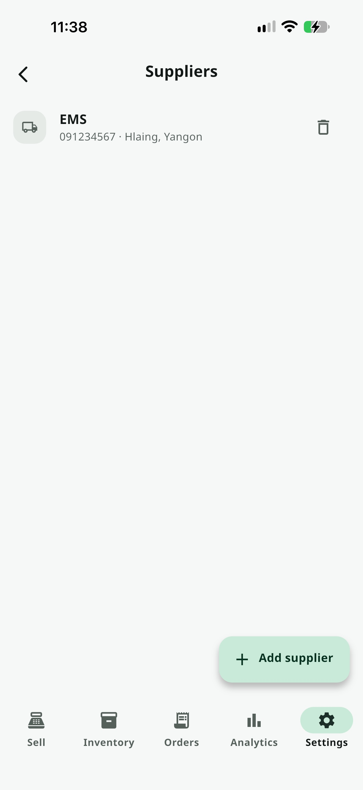
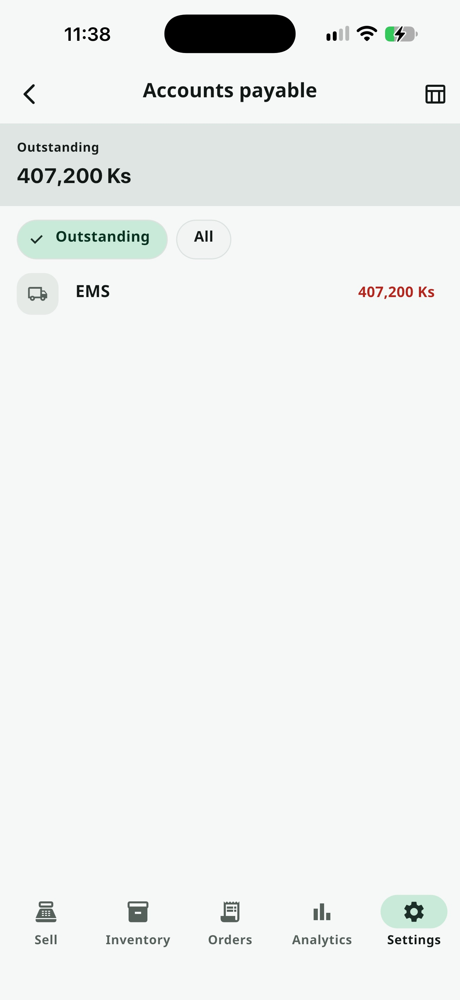
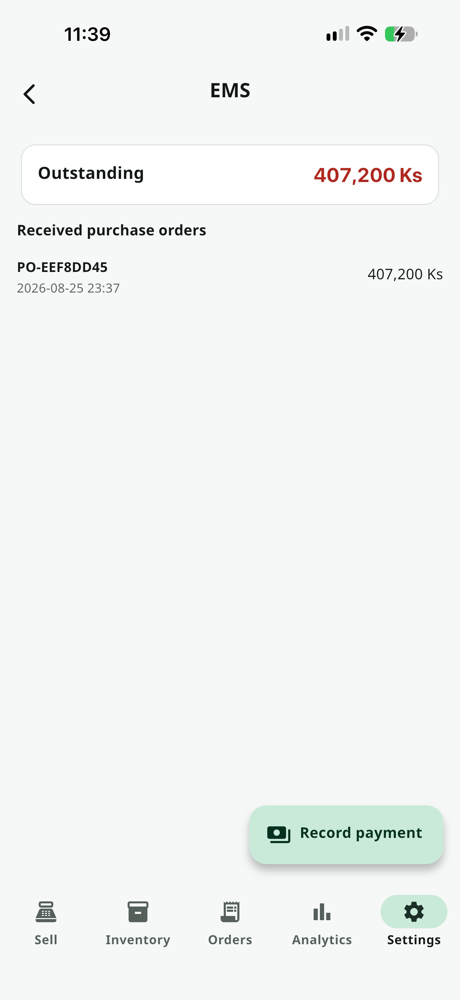

ဝန်ဆောင်မှုများ အားလုံး / ရောင်းသူ ပေးရန်ကျန်
ရောင်းသူ ပေးရန်ကျန်
PremiumSupplier တစ်ဦးစီကို ဘယ်လောက် ပေးရန်ကျန်နေလဲဆိုတာကို တိကျစွာ သိနိုင်ပါတယ် — လက်ခံရရှိပြီးသား ကုန်ဝယ်အမှာစာများကနေ အလိုအလျောက် တွက်ချက်ပြသပေးပြီး၊ ငွေမပေးရသေးသော Bill ကို ဘယ်တော့မှ မမေ့တော့ပါ။
အဆင့်ဆင့် အသုံးပြုနည်း

ရောင်းသူစာရင်း သိမ်းထားပါ (Free)
ဆက်တင် → ရောင်းသူများ ထဲတွင် အမည်၊ ဖုန်း၊ လိပ်စာနှင့် မှတ်ချက်ဖြင့် Supplier များထည့်ထားနိုင်ပါတယ်။ ဒီစာရင်းသည် Free ဖြစ်ပြီး ကုန်ဝယ်အမှာစာ ဖန်တီးချိန် ရွေးရန် နှင့် ပေးရန်ကျန်ငွေကို Supplier အလိုက် စုစည်းရန် နှစ်ခုစလုံးအတွက် အသုံးဝင်ပါတယ်။
- ကျန်ငွေရှိနေသေးသော Supplier ကို ဖျက်လိုက်လျှင်ပင် ကျန်ငွေသည် ၎င်း၏ နောက်ဆုံးအမည်ဖြင့် ဆက်ပြသနေမည် — ကြွေးကို မပျောက်ပါ

ကျန်ငွေကို အလိုအလျောက် တွက်ချက်ပြသသည်
ပေးရန်ကျန် စာရင်းကို လက်ဖြင့် ထည့်စရာ မလိုပါ — ကုန်ဝယ်အမှာစာတစ်ခုကို "လက်ခံရရှိပြီး" အဖြစ် မှတ်သားလိုက်ချိန်တွင် ကျန်ငွေ အလိုအလျောက် ပေါ်လာပြီး ငွေပေးချေမှု မှတ်တမ်းတင်တိုင်း လျော့ကျသွားသည်။ ထိပ်ဆုံး Banner မှာ စုစုပေါင်း ကျန်ငွေ ပြသပြီး၊ Filter chip များဖြင့် ကျန်ငွေရှိသေးသော Supplier (Default) နှင့် ငွေပြည့်ဆပ်ပြီးသား Supplier အားလုံး ("ဆပ်ပြီး" စိမ်းရောင် Pill ဖြင့်) ကြားတွင် ပြောင်းကြည့်နိုင်သည်။

ငွေပေးချေမှု မှတ်တမ်းတင်ပါ
Supplier တစ်ဦးကို နှိပ်လိုက်လျှင် ၎င်းရဲ့ ကျန်ငွေနောက်ကွယ်က လက်ခံရရှိပြီးသား ကုန်ဝယ်အမှာစာများနှင့် ယခင်ငွေပေးချေမှုများကို တွေ့ရမည်။ ကျန်ငွေရှိနေသေးလျှင် "ငွေပေးချေမှု မှတ်တမ်းတင်ရန်" ခလုတ်က ကျန်ငွေအပြည့်ဖြင့် Prefill လုပ်ပေးထားသော Dialog ကို ဖွင့်ပေးမည် — တစ်စိတ်တစ်ပိုင်းသာ ပေးလိုလျှင် ပမာဏကို ပြင်ပြီး Method ရွေးကာ သိမ်းနိုင်သည်။ ပမာဏသည် ကျန်ငွေထက် ဘယ်တော့မှ ပိုနိုင်မည် မဟုတ်ပါ။
သိထားသင့်တဲ့ Tips
လက်ခံရရှိပြီးမှသာ ရေတွက်သည် — ဖွင့်ထားဆဲ (မရသေးသော) ကုန်ဝယ်အမှာစာသည် ပေးရန်ကျန်ထဲ ဘယ်တော့မှ မထည့်ပါ၊ ပယ်ဖျက်ထားသောလည်း ဘယ်တော့မှ မထည့်ပါ။
ရိုးရှင်းသော နှုတ်ခြင်း — ကျန်ငွေ = လက်ခံရရှိပြီး ကုန်ဝယ်အမှာစာစုစုပေါင်း − ထို Supplier အတွက် မှတ်တမ်းတင်ထားသော ငွေပေးချေမှု စုစုပေါင်း — ဒီထက်ပိုရှုပ်ထွေးသော တွက်ချက်မှု မရှိပါ။
ကျန်ငွေ ဘယ်ကလာလဲ — ပေးရန်ကျန် ပေါ်လာနိုင်တဲ့ တစ်ခုတည်းသော နည်းလမ်းက ကုန်ဝယ်အမှာစာကို "လက်ခံရရှိပြီး" အဖြစ် မှတ်သားခြင်းသာ ဖြစ်သည် — ကုန်ဝယ်အမှာစာ စာမျက်နှာကို ကြည့်ပါ။
All In One POS ကို ယနေ့ပင် စမ်းကြည့်ပါ
2 လ အခမဲ့ စမ်းသပ်ကာလ — Card မလို၊ Sign up မလို။
ဒေါင်းလုပ်ဆွဲမည်